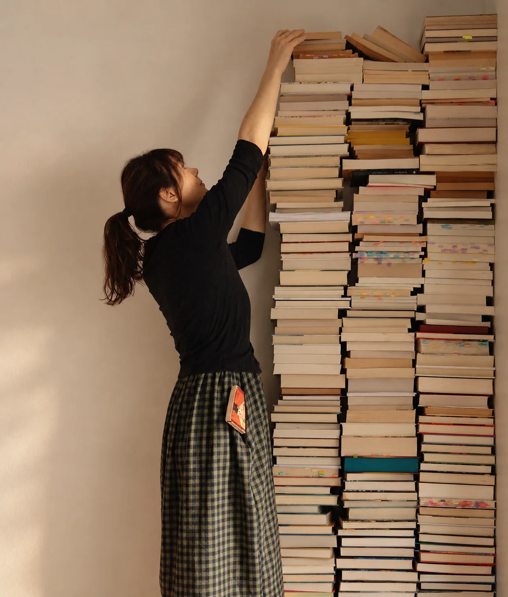

Quando o conhecimento nem sempre se transforma em experiência
Você estuda, faz cursos e conhece diferentes abordagens, mas nem sempre encontra espaço para integrar tudo isso à própria vida.
Na ELARAos estudos se encontram com meditações, práticas e experiências de aprofundamento para que o conhecimento também seja vivido.